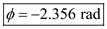
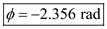
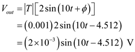

The transfer function of the filter is,

The magnitude of the transfer function is,
Hence, the magnitude is, .
The transfer function of the filter is,
The magnitude of the transfer function is,
Hence, the magnitude is, .
The phase angle is,
Hence, the phase angle is .
(a)
For  , the magnitude is,
, the magnitude is,

Thus, the magnitude for is, .
For  , the phase angle is,
, the phase angle is,
Thus, the phase for  is, .
is, .
If the input is , then the output is,
Thus, the output is, .
(b)
For , the magnitude is,
Thus, the magnitude for  is, .
is, .
 , the phase angle is,
, the phase angle is, 
Thus, the phase for  is, .
is, .
If the input voltage is , then the corresponding output is,
Thus, the output is, 
(c)
For  , the magnitude and phase angle is,
, the magnitude and phase angle is,

Thus, the magnitude for is,  .
.
For  , the magnitude and phase angle is,
, the magnitude and phase angle is,
Thus, the phase for  is, .
is, .
If the input is , then the output is,

Thus, the output is, .